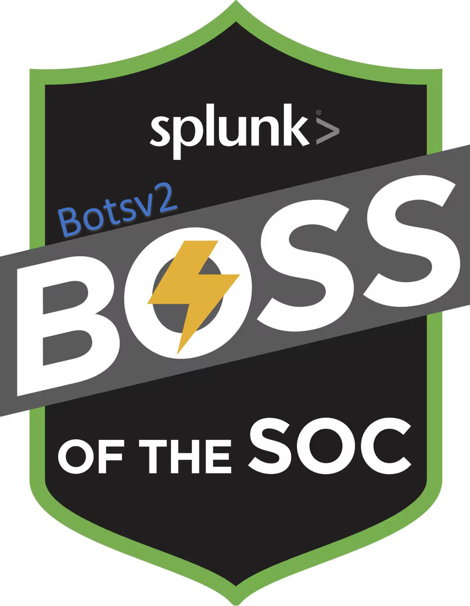

Verified Credentials & Certifications
Professional certifications and verified badges showcasing expertise and commitment to continuous learning in cybersecurity.
CompTIA Security+
CompTIA
Comprehensive IT security certification covering threat management, compliance, and incident response.
Steve Ferrer
Certified Ethical Hacker (CEH)
EC-Council
Advanced penetration testing and ethical hacking certification demonstrating offensive security skills.
Steve Ferrer
GIAC Security Essentials (GSEC)
GIAC
GIAC certification validating practical security knowledge and defensive security expertise.
Steve Ferrer
Cisco Certified Security Specialist
Cisco
Professional Cisco security certification demonstrating expertise in network security, firewalls, and threat defense.
Steve Ferrer
Fortinet Certified Associate Firewall
Fortinet
Fortinet firewall certification demonstrating advanced knowledge of FortiGate deployment, configuration, and security operations.
Steve Ferrer
Splunk Core Certified User
Splunk
Official Splunk certification demonstrating proficiency in SIEM platform operations and search processing language.
Steve Ferrer
AWS Security Fundamentals
Amazon Web Services
Cloud security certification covering AWS security best practices and infrastructure protection.
Steve Ferrer

Boss of the SOC v2 (BOTS)
Splunk Community
Advanced SIEM challenge completion demonstrating practical threat hunting and investigation skills.
Steve Ferrer
✅ All badges display "Steve Ferrer" as credential holder • Click "View Credential" to verify badge authenticity